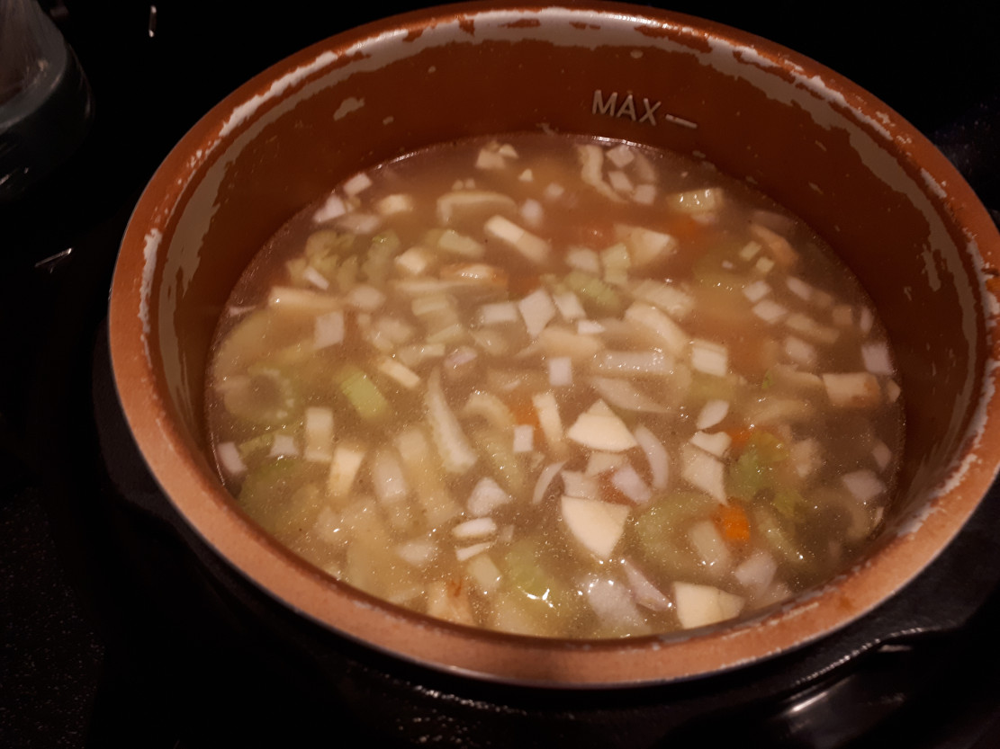

Chicken Stock & Veg

NB: do NOT add salt until step 3 or the lentils will never soften!
- place all the ingredients for the soup into the pressure cooker & cook for 35 mins
- carefully let the pressure out of the pressure cooker
- check the lentils have virtually disappeared and the pearl barley is soft
- add all the ingredients for seasoning and stir well
- add the optional ingredients, stir & check seasoning & adjust to taste
- bring to the boil, reduce the heat and simmer for 5 mins if you are going to serve immediately, but for best results, allow to cool and put in fridge overnight to mature the taste